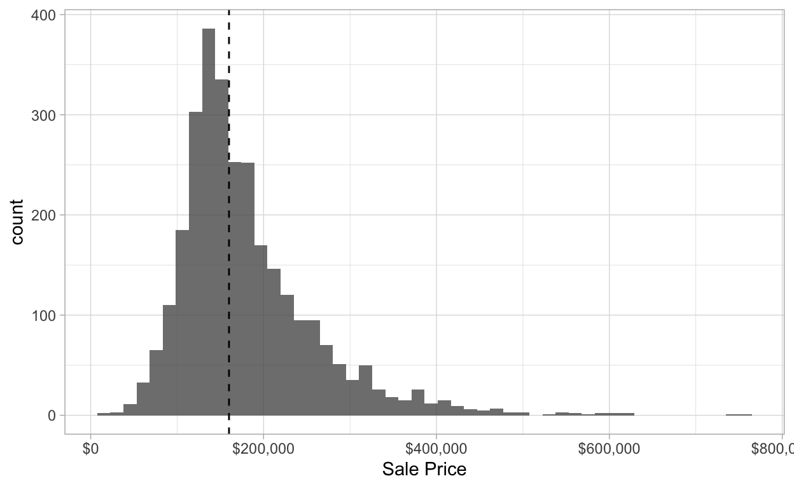
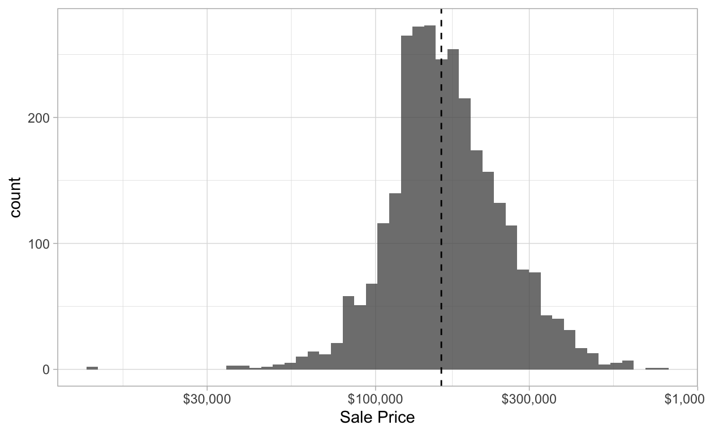
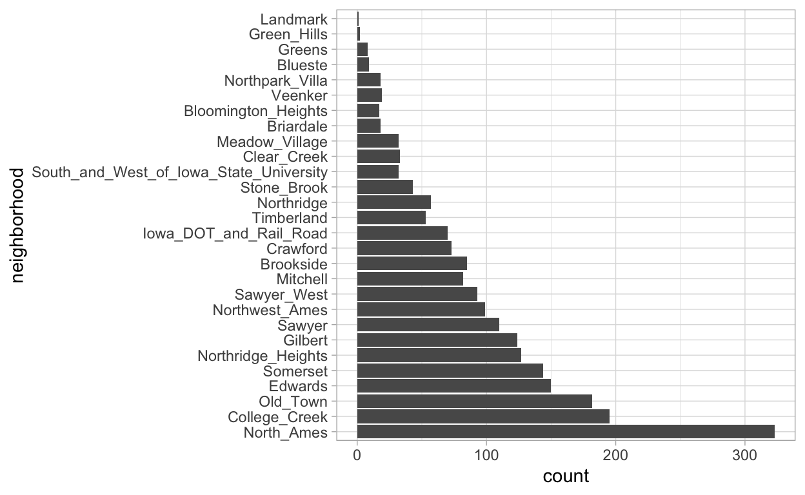
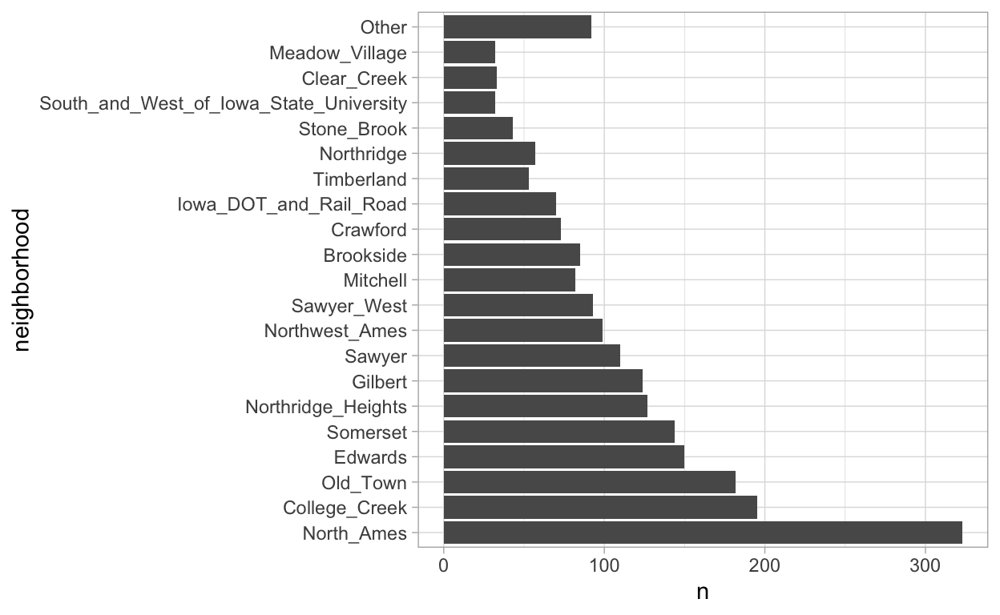
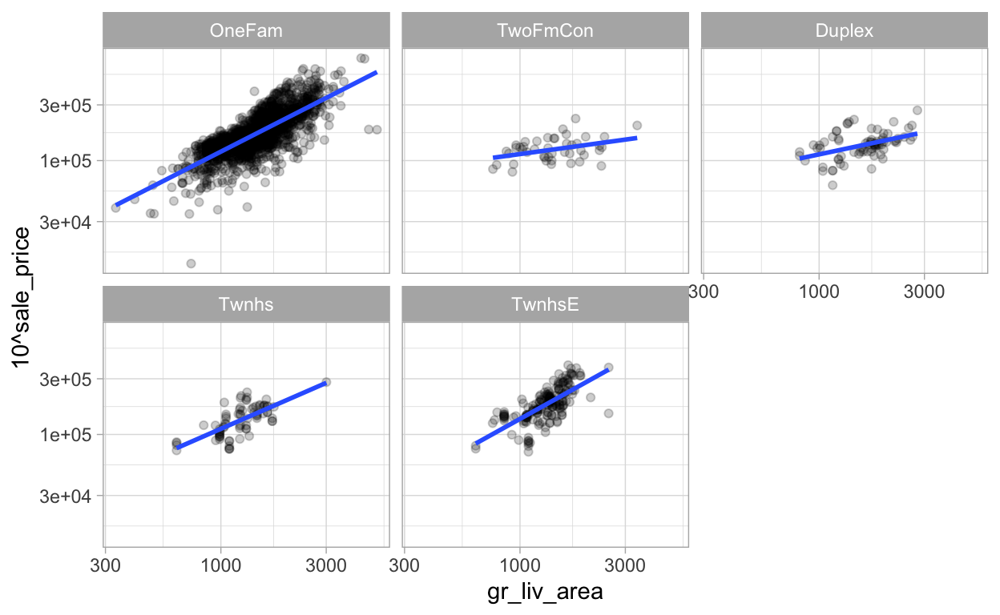
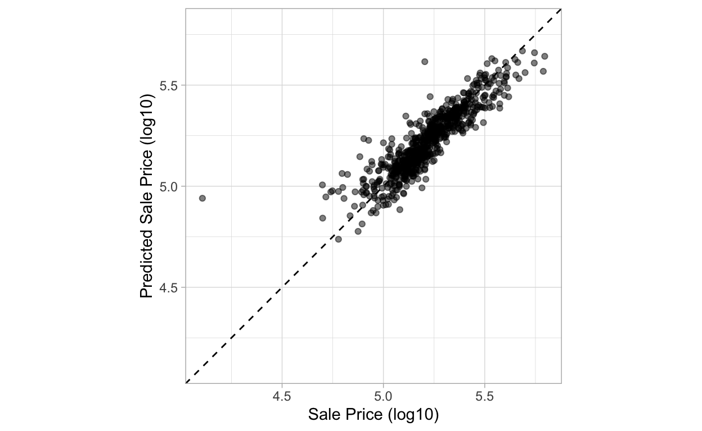
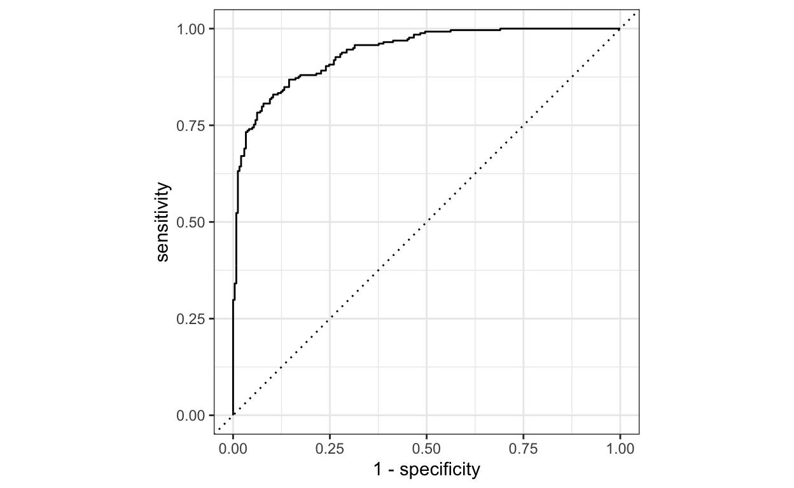
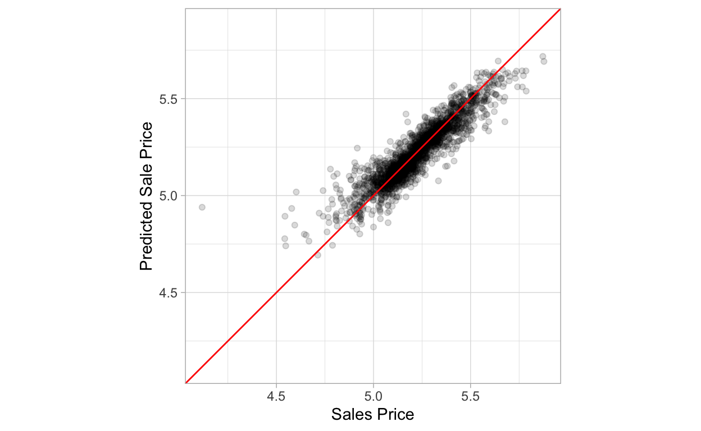
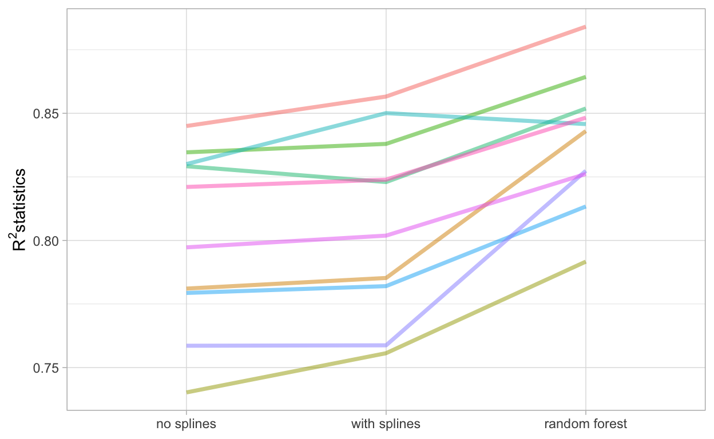

A short description of the post.
library(tidyverse)
library(tidymodels)
library(modeldata)
theme_set(theme_light())
data(ames)
ames <- ames %>% janitor::clean_names()Start with the outcome we want to predict
ames %>%
summarise(mean = mean(sale_price),
median = median(sale_price),
max = max(sale_price))
# A tibble: 1 x 3
mean median max
<dbl> <dbl> <int>
1 180796. 160000 755000
ames %>%
ggplot(aes(sale_price)) +
geom_histogram(bins = 50, alpha = .8) +
geom_vline(xintercept = 160000, lty = 2) +
scale_x_continuous(labels = scales::dollar) +
labs(x = "Sale Price")
The data are right-skewed, There are more inexpensive houses than expensive ones. When facing with this outcome, the price should be transformed to log-scale. The advantages of doing this are no houses will be predicted with negative sales price and the errors in the predicting expensive houses will not have an excessive influence on the data
ames %>%
ggplot(aes(sale_price)) +
geom_histogram(bins = 50, alpha = .8) +
geom_vline(xintercept = 160000, lty = 2) +
scale_x_log10(labels = scales::dollar) +
labs(x = "Sale Price") 
While it’s not perfect but better for modelling instead of using the untransformed data. However, the drawback of transformation is related to interpretation. For examples, the RMSE is used to measure the performance of model in regression models. It uses the difference between the observed and predicted values in its calculations. It is difficult to understand by RMSE in log-scale.
However, we stick with the log-transformation due to its superior in modelling
ames <- ames %>%
mutate(sale_price = log10(sale_price))
ames %>%
select(neighborhood, longitude, latitude)
# A tibble: 2,930 x 3
neighborhood longitude latitude
<fct> <dbl> <dbl>
1 North_Ames -93.6 42.1
2 North_Ames -93.6 42.1
3 North_Ames -93.6 42.1
4 North_Ames -93.6 42.1
5 Gilbert -93.6 42.1
6 Gilbert -93.6 42.1
7 Stone_Brook -93.6 42.1
8 Stone_Brook -93.6 42.1
9 Stone_Brook -93.6 42.1
10 Gilbert -93.6 42.1
# … with 2,920 more rowsSteps to create a useful model: * parameter estimation * model selection * tuning * performance assessment
At the beginning, there is usually an initial finite pool of data for all these tasks. The question is how this data is applied to these steps? Data spending is used for this consideration. One strategy is to spend a specific subset of data to determine which predictors are informative (when the data and predictors are abundant).
For empirical model validation, the common approach is to split the existing pool of data into two distinct sets, training and testing sets. The training set is usually the majority of the data. These data are a sandbox for model building where different model can be fit, features engineering strategies are investigated. The test set is held in reserve until one or two models are chosen. It is used to determine the efficacy of the model.
The most common method to split is simple random sampling.
set.seed(123) # for reproducible purpose
# save the split information for an 80/20 split of data
ames_split <- initial_split(ames, prob = 0.80)
# Extract the training, testing set
ames_train <- training(ames_split)
ames_test <- testing(ames_split)Simple random sampling is doing well in many cases but not with a dramatic class imbalance (one class occurs much less frequently than another). Using a simple random sampe may allocate these infrequent class disproportionately.
To avoid this, stratified sampling can be used. The training/test split is conducted separately within each class. For regression problems, the outcome data can be binned into quartiles and then stratified sampling conducted four separate times.
The Ames housing data is right-skewed which has more inexpensive houses than expensive one. We can do the stratified random sample for 80/20 split
set.seed(123)
ames_split <- initial_split(ames, prob = 0.80, strata = sale_price)
# train/test sets
ames_train <- training(ames_split)
ames_test <- testing(ames_split)
dim(ames_train)
[1] 2199 74Highly dependent on the context of the problem in hand
Question: “How do we know what is the best if we don’t measure performance until the test set?” To avoid over fitting in which the models performance well in the training set but poorly on the test set. A validation set of data were held back and used to understand how well the model performed before testing
The data set will have multiple rows per experimental unit. Simple resampling across rows would lead to some data within an experimental unit being in the training set and others in the test set. Data splitting should occur at the independent experimental unit level of the data
Feature engineering includes the activities that reformat the predictor values to make them easier to use for a model such as transformation and encoding to best represent the characteristics of the data.
Typical preprocessing to build better features: * correlation between predictors can be reduced by removing some of them * some predictors have missing values, they can be imputed by a sub-model * the distribution of some skewed predictors can benefit from transformation
The recipe in tidymodels defines a series of steps for data processing without executing them. It’s only a specification of what should be done
simple_ames <- ames_train %>%
recipe(sale_price ~ neighborhood + gr_liv_area + year_built + bldg_type, data = .) %>%
step_log(gr_liv_area, base = 10) %>%
step_dummy(all_nominal())Benefit of using recipe: * The computations can be recycled across models * Broader set of data processing choices * Compact syntax * All data processing in one place
The recipe() has not executed yet. The next step is to estimate any quantities required by the steps using the prep().
simple_ames <- prep(simple_ames, training = ames_train)
simple_ames
Data Recipe
Inputs:
role #variables
outcome 1
predictor 4
Training data contained 2199 data points and no missing data.
Operations:
Log transformation on gr_liv_area [trained]
Dummy variables from neighborhood, bldg_type [trained]The third phase is to apply the preprocessing operations to a data set using the bake().
test_ex <- bake(simple_ames, new_data = ames_test)
test_ex
# A tibble: 731 x 35
gr_liv_area year_built sale_price neighborhood_Co… neighborhood_Ol…
<dbl> <int> <dbl> <dbl> <dbl>
1 3.32 1968 5.39 0 0
2 3.26 1999 5.28 0 0
3 3.07 1992 5.27 0 0
4 3.27 2010 5.60 0 0
5 3.04 1971 5.02 0 0
6 3.23 2007 5.49 0 0
7 3.29 2009 5.60 0 0
8 3.19 2005 5.34 0 0
9 3.35 2002 5.51 0 0
10 3.12 2005 5.30 0 0
# … with 721 more rows, and 30 more variables:
# neighborhood_Edwards <dbl>, neighborhood_Somerset <dbl>,
# neighborhood_Northridge_Heights <dbl>,
# neighborhood_Gilbert <dbl>, neighborhood_Sawyer <dbl>,
# neighborhood_Northwest_Ames <dbl>,
# neighborhood_Sawyer_West <dbl>, neighborhood_Mitchell <dbl>,
# neighborhood_Brookside <dbl>, neighborhood_Crawford <dbl>,
# neighborhood_Iowa_DOT_and_Rail_Road <dbl>,
# neighborhood_Timberland <dbl>, neighborhood_Northridge <dbl>,
# neighborhood_Stone_Brook <dbl>,
# neighborhood_South_and_West_of_Iowa_State_University <dbl>,
# neighborhood_Clear_Creek <dbl>,
# neighborhood_Meadow_Village <dbl>, neighborhood_Briardale <dbl>,
# neighborhood_Bloomington_Heights <dbl>,
# neighborhood_Veenker <dbl>, neighborhood_Northpark_Villa <dbl>,
# neighborhood_Blueste <dbl>, neighborhood_Greens <dbl>,
# neighborhood_Green_Hills <dbl>, neighborhood_Landmark <dbl>,
# neighborhood_Hayden_Lake <dbl>, bldg_type_TwoFmCon <dbl>,
# bldg_type_Duplex <dbl>, bldg_type_Twnhs <dbl>,
# bldg_type_TwnhsE <dbl>step_unknown(): change the missing values to a dedicated factor levelstep_novel(): allot a new level for anticipating the new factor level appearstep_other(): lump the factors, converting infrequent values to a catch-all level of “other”step_unorder(): convert to regular factorsstep_ordinalscore(): maps specific numeric values to each factor level
ames_train %>%
ggplot(aes(y = neighborhood)) +
geom_bar()
ames_train %>%
mutate(neighborhood = fct_lump_prop(neighborhood, prop = 0.01)) %>%
count(neighborhood) %>%
ggplot(aes(n, neighborhood)) +
geom_col()
We can achieve this with the recipe()
simple_ames <- recipe(sale_price ~ neighborhood + gr_liv_area + year_built + bldg_type,
data = ames_train) %>%
step_log(gr_liv_area , base = 10) %>%
step_other(neighborhood, threshold = 0.01) %>%
step_dummy(all_nominal())Interaction effects involve two or more predictors. Such an effect occurs when one predictor has an effect on the outcome that is contingent on one or more other predictors. For example, if you were trying to predict your morning commute time, two potential predictors could be the amount of traffic and the time of day. However, the relationship between commute time and the amount of traffic is different for different times of day. In this case, you could add an interaction term between the two predictors to the model along with the original two predictors (which are called the “main effects”)
In the Ames training set, the general living area differ for different building types
ames_train %>%
ggplot(aes(gr_liv_area, 10^sale_price)) +
geom_point(alpha = 0.2) +
geom_smooth(method = "lm", se = FALSE) +
facet_wrap(~ bldg_type) +
scale_x_log10() +
scale_y_log10()
Again, we can achieve the interactions in recipe as
simple_ames <-
recipe(sale_price ~ neighborhood + gr_liv_area + year_built + bldg_type,
data = ames_train) %>%
step_log(Gr_Liv_Area, base = 10) %>%
step_other(Neighborhood, threshold = 0.01) %>%
step_dummy(all_nominal()) %>%
step_interact(~ gr_liv_area:start_withs("bldg_type_"))Another common method for representing multiple features at once is called feature extraction. It creates a new features from the predictors that capture the information in the broader set as a whole.
Principal component analysis (PCA) tries to extract as much information from predictors set as possible using a smaller number of features. PCA is a linear extraction method, meaning the each new feature is a linear combination of original predictors. The PCA scores are uncorrelated with one another. PCA reduces the correlation between predictors.
We can achieve with step_pca() in the recipes
downsampling: keep the minority class and take a random sample of majority class so that the class are balance
upsampling: replicates sample from the minority class to achieve the balance classes.
ames_rec <-
recipe(sale_price ~ neighborhood + gr_liv_area + year_built + bldg_type +
latitude + longitude, data = ames_train) %>%
step_log(gr_liv_area, base = 10) %>%
step_other(neighborhood, threshold = 0.01) %>%
step_dummy(all_nominal()) %>%
step_interact( ~ gr_liv_area:starts_with("Bldg_Type_") ) %>%
step_ns(latitude, longitude, deg_free = 20)
ames_rec_prep <- prep(ames_rec)
ames_train_prep <- bake(ames_rec_prep, new_data = ames_train)
ames_test_prep <- bake(ames_rec_prep, new_data = ames_test)
# fit model
lm_fit <- lm(sale_price ~ ., data = ames_train_prep)
# get the result
glance(lm_fit)
# A tibble: 1 x 12
r.squared adj.r.squared sigma statistic p.value df logLik AIC
<dbl> <dbl> <dbl> <dbl> <dbl> <dbl> <dbl> <dbl>
1 0.822 0.816 0.0757 140. 0 70 2592. -5040.
# … with 4 more variables: BIC <dbl>, deviance <dbl>,
# df.residual <int>, nobs <int>
# coefficients
tidy(lm_fit)
# A tibble: 71 x 5
term estimate std.error statistic p.value
<chr> <dbl> <dbl> <dbl> <dbl>
1 (Intercept) -5.31e-1 0.296 -1.79 7.32e- 2
2 gr_liv_area 6.48e-1 0.0161 40.3 1.46e-264
3 year_built 1.94e-3 0.000139 13.9 2.69e- 42
4 neighborhood_College_Creek -8.98e-2 0.0332 -2.71 6.83e- 3
5 neighborhood_Old_Town -5.16e-2 0.0129 -4.01 6.20e- 5
6 neighborhood_Edwards -1.53e-1 0.0274 -5.57 2.91e- 8
7 neighborhood_Somerset 3.64e-2 0.0189 1.92 5.50e- 2
8 neighborhood_Northridge_Hei… 9.84e-2 0.0272 3.61 3.10e- 4
9 neighborhood_Gilbert 7.28e-4 0.0219 0.0333 9.73e- 1
10 neighborhood_Sawyer -1.56e-1 0.0263 -5.93 3.59e- 9
# … with 61 more rows
# apply on test set
predict(lm_fit, ames_test_prep) %>% head()
1 2 3 4 5 6
5.307819 5.300849 5.167501 5.518595 5.087885 5.488895
tidy(ames_rec)
# A tibble: 5 x 6
number operation type trained skip id
<int> <chr> <chr> <lgl> <lgl> <chr>
1 1 step log FALSE FALSE log_mmI2Z
2 2 step other FALSE FALSE other_e3mwB
3 3 step dummy FALSE FALSE dummy_Rh9Lx
4 4 step interact FALSE FALSE interact_pkwDF
5 5 step ns FALSE FALSE ns_ARVoa Call recipes(), it assigns roles to each of the columns, either predictor or outcomes. However, other roles can be assigned if needed by using: * add_role() * remove_role() * update_role()
parsnip provides a fluent and standardised interface for a variety of different models.There are 3 steps: * Specify the type of model based on its mathematical structure: linear regression, random forrest, … * Specify the engine for fitting model: the software package is used * Declare the mode of the model: regression/classification
lm_model <- linear_reg() %>%
set_engine("lm")
lm_form_fit <-
lm_model %>%
fit(sale_price ~ longitude + latitude, data = ames_train)
lm_form_fit
parsnip model object
Fit time: 7ms
Call:
stats::lm(formula = sale_price ~ longitude + latitude, data = data)
Coefficients:
(Intercept) longitude latitude
-316.368 -2.083 3.010
lm_form_fit %>% pluck("fit")
Call:
stats::lm(formula = sale_price ~ longitude + latitude, data = data)
Coefficients:
(Intercept) longitude latitude
-316.368 -2.083 3.010 Base R result
lm_form_fit %>%
pluck("fit") %>%
summary()
Call:
stats::lm(formula = sale_price ~ longitude + latitude, data = data)
Residuals:
Min 1Q Median 3Q Max
-1.01943 -0.09755 -0.01719 0.09854 0.57462
Coefficients:
Estimate Std. Error t value Pr(>|t|)
(Intercept) -316.3679 14.8917 -21.25 <2e-16 ***
longitude -2.0831 0.1334 -15.62 <2e-16 ***
latitude 3.0099 0.1849 16.27 <2e-16 ***
---
Signif. codes: 0 '***' 0.001 '**' 0.01 '*' 0.05 '.' 0.1 ' ' 1
Residual standard error: 0.1595 on 2196 degrees of freedom
Multiple R-squared: 0.184, Adjusted R-squared: 0.1833
F-statistic: 247.6 on 2 and 2196 DF, p-value: < 2.2e-16Broom
lm_form_fit %>%
pluck("fit") %>%
tidy()
# A tibble: 3 x 5
term estimate std.error statistic p.value
<chr> <dbl> <dbl> <dbl> <dbl>
1 (Intercept) -316. 14.9 -21.2 3.04e-91
2 longitude -2.08 0.133 -15.6 3.21e-52
3 latitude 3.01 0.185 16.3 2.58e-56Conform the 3 rules: * The results are always tibble * The columns are always predictable * Same rows as the input data set
predict(lm_form_fit, new_data = ames_test)
# A tibble: 731 x 1
.pred
<dbl>
1 5.22
2 5.29
3 5.28
4 5.26
5 5.24
6 5.33
7 5.32
8 5.32
9 5.31
10 5.31
# … with 721 more rows
ames_test %>%
select(sale_price) %>%
bind_cols(predict(lm_form_fit, new_data = ames_test)) %>%
bind_cols(predict(lm_form_fit, new_data = ames_test, type = "pred_int")) # add prediction interval
# A tibble: 731 x 4
sale_price .pred .pred_lower .pred_upper
<dbl> <dbl> <dbl> <dbl>
1 5.39 5.22 4.90 5.53
2 5.28 5.29 4.97 5.60
3 5.27 5.28 4.96 5.59
4 5.60 5.26 4.95 5.58
5 5.02 5.24 4.93 5.55
6 5.49 5.33 5.02 5.64
7 5.60 5.32 5.01 5.64
8 5.34 5.32 5.01 5.63
9 5.51 5.31 5.00 5.63
10 5.30 5.31 4.99 5.62
# … with 721 more rows#s Workflow basics Combine modelling and preprocessing together
lm_model <-
linear_reg() %>%
set_engine("lm")
lm_workflow <-
workflow() %>%
add_model(lm_model) %>%
add_formula(sale_price ~ longitude + latitude)
# apply to fit model
lm_fit <- fit(lm_workflow, ames_train)
# remove formula
lm_workflow <- lm_workflow %>%
remove_formula()
lm_workflow <- lm_workflow %>%
add_recipe(ames_rec)
# do prep(), bake(), fit() in one step
lm_fit <- fit(lm_workflow, ames_train)
# do bake() and predict() in one step
predict(lm_fit, ames_test)
# A tibble: 731 x 1
.pred
<dbl>
1 5.31
2 5.30
3 5.17
4 5.52
5 5.09
6 5.49
7 5.51
8 5.43
9 5.55
10 5.24
# … with 721 more rowsIf we need an object we can use pull to retrieve them
# recipe
lm_fit %>%
pull_workflow_prepped_recipe() %>%
tidy()
# A tibble: 5 x 6
number operation type trained skip id
<int> <chr> <chr> <lgl> <lgl> <chr>
1 1 step log TRUE FALSE log_mmI2Z
2 2 step other TRUE FALSE other_e3mwB
3 3 step dummy TRUE FALSE dummy_Rh9Lx
4 4 step interact TRUE FALSE interact_pkwDF
5 5 step ns TRUE FALSE ns_ARVoa
# fit
lm_fit %>%
pull_workflow_fit() %>%
tidy()
# A tibble: 71 x 5
term estimate std.error statistic p.value
<chr> <dbl> <dbl> <dbl> <dbl>
1 (Intercept) -5.31e-1 0.296 -1.79 7.32e- 2
2 gr_liv_area 6.48e-1 0.0161 40.3 1.46e-264
3 year_built 1.94e-3 0.000139 13.9 2.69e- 42
4 neighborhood_College_Creek -8.98e-2 0.0332 -2.71 6.83e- 3
5 neighborhood_Old_Town -5.16e-2 0.0129 -4.01 6.20e- 5
6 neighborhood_Edwards -1.53e-1 0.0274 -5.57 2.91e- 8
7 neighborhood_Somerset 3.64e-2 0.0189 1.92 5.50e- 2
8 neighborhood_Northridge_Hei… 9.84e-2 0.0272 3.61 3.10e- 4
9 neighborhood_Gilbert 7.28e-4 0.0219 0.0333 9.73e- 1
10 neighborhood_Sawyer -1.56e-1 0.0263 -5.93 3.59e- 9
# … with 61 more rows
ames_test_res <- predict(lm_fit, new_data = ames_test %>% select(-sale_price))
ames_test_res <- bind_cols(ames_test_res, ames_test %>% select(sale_price))
ames_test_res
# A tibble: 731 x 2
.pred sale_price
<dbl> <dbl>
1 5.31 5.39
2 5.30 5.28
3 5.17 5.27
4 5.52 5.60
5 5.09 5.02
6 5.49 5.49
7 5.51 5.60
8 5.43 5.34
9 5.55 5.51
10 5.24 5.30
# … with 721 more rows
ames_test_res %>%
ggplot(aes(sale_price, .pred)) +
geom_point(alpha = 0.5) +
geom_abline(lty = 2) +
labs(
x = "Sale Price (log10)",
y = "Predicted Sale Price (log10)") +
coord_obs_pred()
ames_test_res %>%
rmse(truth = sale_price,
estimate = .pred)
# A tibble: 1 x 3
.metric .estimator .estimate
<chr> <chr> <dbl>
1 rmse standard 0.0808Compute multiple metrics at once
ames_metrics <- metric_set(rmse, rsq, mae)
ames_metrics(ames_test_res ,truth = sale_price, estimate = .pred)
# A tibble: 3 x 3
.metric .estimator .estimate
<chr> <chr> <dbl>
1 rmse standard 0.0808
2 rsq standard 0.795
3 mae standard 0.0558
data("two_class_example")
str(two_class_example)
'data.frame': 500 obs. of 4 variables:
$ truth : Factor w/ 2 levels "Class1","Class2": 2 1 2 1 2 1 1 1 2 2 ...
$ Class1 : num 0.00359 0.67862 0.11089 0.73516 0.01624 ...
$ Class2 : num 0.996 0.321 0.889 0.265 0.984 ...
$ predicted: Factor w/ 2 levels "Class1","Class2": 2 1 2 1 2 1 1 1 2 2 ...
# Confusion matrix
two_class_example %>%
conf_mat(truth = truth, estimate = predicted)
Truth
Prediction Class1 Class2
Class1 227 50
Class2 31 192
# Accuracy
accuracy(two_class_example, truth = truth, estimate = predicted)
# A tibble: 1 x 3
.metric .estimator .estimate
<chr> <chr> <dbl>
1 accuracy binary 0.838
# Matthews correlation coefficients
mcc(two_class_example, truth, predicted)
# A tibble: 1 x 3
.metric .estimator .estimate
<chr> <chr> <dbl>
1 mcc binary 0.677
# F1 metri
f_meas(two_class_example, truth, predicted)
# A tibble: 1 x 3
.metric .estimator .estimate
<chr> <chr> <dbl>
1 f_meas binary 0.849There are numerous classification metrics that use the predicted probabilities as inputs rather than the hard class predictions. For example, the receiver operating characteristic (ROC) curve computes the sensitivity and specificity over a continuum of different event thresholds.
two_class_curve <- roc_curve(two_class_example, truth, Class1)
two_class_curve
# A tibble: 502 x 3
.threshold specificity sensitivity
<dbl> <dbl> <dbl>
1 -Inf 0 1
2 1.79e-7 0 1
3 4.50e-6 0.00413 1
4 5.81e-6 0.00826 1
5 5.92e-6 0.0124 1
6 1.22e-5 0.0165 1
7 1.40e-5 0.0207 1
8 1.43e-5 0.0248 1
9 2.38e-5 0.0289 1
10 3.30e-5 0.0331 1
# … with 492 more rows
roc_auc(two_class_example, truth, Class1)
# A tibble: 1 x 3
.metric .estimator .estimate
<chr> <chr> <dbl>
1 roc_auc binary 0.939
autoplot(two_class_curve)
rf_model <-
rand_forest(trees = 1000) %>%
set_engine("ranger") %>%
set_mode("regression")
rf_workflow <- workflow() %>%
add_formula(
sale_price ~ neighborhood + gr_liv_area + year_built + bldg_type + latitude + longitude
) %>%
add_model(rf_model)
rf_fit <- fit(rf_workflow, data = ames_train)
estimate_perf <- function(model, dat ){
ames_metrics <- metric_set(rmse, rsq)
predict(model, dat) %>%
bind_cols(dat %>% select(sale_price)) %>%
ames_metrics(truth = sale_price, estimate = .pred)
}
estimate_perf(rf_fit, ames_train)
# A tibble: 2 x 3
.metric .estimator .estimate
<chr> <chr> <dbl>
1 rmse standard 0.0351
2 rsq standard 0.964
estimate_perf(lm_fit, ames_train)
# A tibble: 2 x 3
.metric .estimator .estimate
<chr> <chr> <dbl>
1 rmse standard 0.0744
2 rsq standard 0.822
# test set
estimate_perf(rf_fit, ames_test)
# A tibble: 2 x 3
.metric .estimator .estimate
<chr> <chr> <dbl>
1 rmse standard 0.0743
2 rsq standard 0.829
estimate_perf(lm_fit, ames_test)
# A tibble: 2 x 3
.metric .estimator .estimate
<chr> <chr> <dbl>
1 rmse standard 0.0808
2 rsq standard 0.795 The performance of random forest in test set is much worse than training set If the test set should not be used immediately, and re-predicting the training set is a bad idea, what should be done? Resampling methods, such as cross-validation or validation sets, are the solution.
Resampling is only conducted on the training set * the model is fit with the analysis set * the model is evaluated with the assessment set
Suppose twenty iterations of resampling are conducted. This means that twenty separate models are fit on the analysis sets and the corresponding assessment sets produce twenty sets of performance statistics. The final estimate of performance for a model is the average of the twenty replicates of the statistics
While there are a number of variations, the most common cross-validation method is V-fold cross-validation. The data are randomly partitioned into V sets of roughly equal size (called the “folds”).
For 3-fold cross-validation, each iteration, one fold is held out for assessment statistics and the remaining folds are substrate for the model. This process continues for each fold so that three models produce three sets of performance statistics.
set.seed(55)
ames_folds <- vfold_cv(ames_train, v = 10)
ames_folds
# 10-fold cross-validation
# A tibble: 10 x 2
splits id
<list> <chr>
1 <split [2K/220]> Fold01
2 <split [2K/220]> Fold02
3 <split [2K/220]> Fold03
4 <split [2K/220]> Fold04
5 <split [2K/220]> Fold05
6 <split [2K/220]> Fold06
7 <split [2K/220]> Fold07
8 <split [2K/220]> Fold08
9 <split [2K/220]> Fold09
10 <split [2K/219]> Fold10There are a variety of variations on cross-validation. The most important is repeated V-fold cross-validation. Depending on the size or other characteristics of the data, the resampling estimate produced by V-fold cross-validation may be excessively noisy. As with many statistical problems, one way to reduce noise is to gather more data. For cross-validation, this means averaging more than V statistics.
To create R repeats of V-fold cross-validation, the same fold generation process is done R times to generate R collections of V partitions. Now, instead of averaging V statistics, VxR statistics produce the final resampling estimate. Due to the Central Limit Theorem, the summary statistics from each model tend toward a normal distribution.
vfold_cv(ames_train, v = 10, repeats = 5)
# 10-fold cross-validation repeated 5 times
# A tibble: 50 x 3
splits id id2
<list> <chr> <chr>
1 <split [2K/220]> Repeat1 Fold01
2 <split [2K/220]> Repeat1 Fold02
3 <split [2K/220]> Repeat1 Fold03
4 <split [2K/220]> Repeat1 Fold04
5 <split [2K/220]> Repeat1 Fold05
6 <split [2K/220]> Repeat1 Fold06
7 <split [2K/220]> Repeat1 Fold07
8 <split [2K/220]> Repeat1 Fold08
9 <split [2K/220]> Repeat1 Fold09
10 <split [2K/219]> Repeat1 Fold10
# … with 40 more rowsV is the number of data points in the training set. If there are n training set samples, n models are fit using n -1 rows of the training set
LOO is computationally excessive and it may not have good statistical properties
Like V-fold cross-validation, it allocates a fixed proportion of data to the assessment sets. The difference is that, for MCCV, this proportion of the data is randomly selected each time
set.seed(12)
val_set <- validation_split(ames_train, prop = 3/4)
val_set
# Validation Set Split (0.75/0.25)
# A tibble: 1 x 2
splits id
<list> <chr>
1 <split [1.6K/549]> validationA bootstrap sample of the training set is a sample that is the same size as the training set but is drawn with replacement.
Each data point has a 63.2% chance of inclusion in the training set at least once. The assessment set contains all of the training set samples that were not selected for the analysis set (on average, with 36.8% of the training set). When bootstrapping, the assessment set is often called the “out-of-bag” sample
bootstraps(ames_train, times = 5)
# Bootstrap sampling
# A tibble: 5 x 2
splits id
<list> <chr>
1 <split [2.2K/790]> Bootstrap1
2 <split [2.2K/814]> Bootstrap2
3 <split [2.2K/797]> Bootstrap3
4 <split [2.2K/827]> Bootstrap4
5 <split [2.2K/794]> Bootstrap5When the data have a strong time component, a resampling method should support modeling to estimate seasonal and other temporal trends within the data
keep_pred <- control_resamples(save_pred = TRUE)
set.seed(130)
rf_res <-
rf_workflow %>%
fit_resamples(resamples = ames_folds, control = keep_pred)
rf_res
# Resampling results
# 10-fold cross-validation
# A tibble: 10 x 5
splits id .metrics .notes .predictions
<list> <chr> <list> <list> <list>
1 <split [2K/22… Fold01 <tibble [2 × … <tibble [0 ×… <tibble [220 × …
2 <split [2K/22… Fold02 <tibble [2 × … <tibble [0 ×… <tibble [220 × …
3 <split [2K/22… Fold03 <tibble [2 × … <tibble [0 ×… <tibble [220 × …
4 <split [2K/22… Fold04 <tibble [2 × … <tibble [0 ×… <tibble [220 × …
5 <split [2K/22… Fold05 <tibble [2 × … <tibble [0 ×… <tibble [220 × …
6 <split [2K/22… Fold06 <tibble [2 × … <tibble [0 ×… <tibble [220 × …
7 <split [2K/22… Fold07 <tibble [2 × … <tibble [0 ×… <tibble [220 × …
8 <split [2K/22… Fold08 <tibble [2 × … <tibble [0 ×… <tibble [220 × …
9 <split [2K/22… Fold09 <tibble [2 × … <tibble [0 ×… <tibble [220 × …
10 <split [2K/21… Fold10 <tibble [2 × … <tibble [0 ×… <tibble [219 × …
# metrics for each example
collect_metrics(rf_res, summarize = FALSE)
# A tibble: 20 x 4
id .metric .estimator .estimate
<chr> <chr> <chr> <dbl>
1 Fold01 rmse standard 0.0668
2 Fold01 rsq standard 0.884
3 Fold02 rmse standard 0.0625
4 Fold02 rsq standard 0.843
5 Fold03 rmse standard 0.0818
6 Fold03 rsq standard 0.792
7 Fold04 rmse standard 0.0675
8 Fold04 rsq standard 0.864
9 Fold05 rmse standard 0.0746
10 Fold05 rsq standard 0.852
11 Fold06 rmse standard 0.0668
12 Fold06 rsq standard 0.846
13 Fold07 rmse standard 0.0762
14 Fold07 rsq standard 0.813
15 Fold08 rmse standard 0.0719
16 Fold08 rsq standard 0.827
17 Fold09 rmse standard 0.0710
18 Fold09 rsq standard 0.826
19 Fold10 rmse standard 0.0691
20 Fold10 rsq standard 0.848
# average
collect_metrics(rf_res)
# A tibble: 2 x 5
.metric .estimator mean n std_err
<chr> <chr> <dbl> <int> <dbl>
1 rmse standard 0.0708 10 0.00176
2 rsq standard 0.840 10 0.00829
# collect predictions
assess_res <- collect_predictions(rf_res)
assess_res
# A tibble: 2,199 x 4
id .pred .row sale_price
<chr> <dbl> <int> <dbl>
1 Fold01 5.24 11 5.23
2 Fold01 5.36 47 5.35
3 Fold01 5.42 52 5.46
4 Fold01 5.15 94 5.15
5 Fold01 5.16 111 5.15
6 Fold01 5.13 115 5.04
7 Fold01 5.11 117 5.16
8 Fold01 5.10 118 5.11
9 Fold01 5.15 134 5.03
10 Fold01 5.06 140 5.18
# … with 2,189 more rows
assess_res %>%
ggplot(aes(sale_price, .pred)) +
geom_point(alpha = 0.15) +
geom_abline(col = "red") +
coord_obs_pred() +
labs(
x = "Sales Price",
y = "Predicted Sale Price"
)
There was one house in the training set with a low observed sale price that is significantly overpredicted by the model. Which house was that?
over_predicted <- assess_res %>%
mutate(residual = sale_price - .pred) %>%
arrange(desc(abs(residual))) %>%
slice(1)
ames_train %>%
slice(over_predicted$.row) %>%
select(gr_liv_area, neighborhood, year_built, bedroom_abv_gr, full_bath)
# A tibble: 1 x 5
gr_liv_area neighborhood year_built bedroom_abv_gr full_bath
<int> <fct> <int> <int> <int>
1 733 Iowa_DOT_and_Rail_R… 1952 2 1
# The number of physical cores
parallel::detectCores(logical = TRUE)
[1] 8
lm_with_splines_res <-
lm_workflow %>%
fit_resamples(resamples = ames_folds, control = keep_pred)
no_spline_rec <-
recipe(sale_price ~ neighborhood + gr_liv_area + year_built + bldg_type +
latitude + longitude, data = ames_train) %>%
# Recall that Sale_Price is pre-logged
step_log(gr_liv_area, base = 10) %>%
step_other(neighborhood, threshold = 0.01) %>%
step_dummy(all_nominal()) %>%
step_interact( ~ gr_liv_area:starts_with("Bldg_Type_") )
lm_no_splines_res <- lm_workflow %>%
remove_recipe() %>%
add_recipe(no_spline_rec) %>%
fit_resamples(resamples = ames_folds, control = keep_pred)
collect_metrics(lm_with_splines_res)
# A tibble: 2 x 5
.metric .estimator mean n std_err
<chr> <chr> <dbl> <int> <dbl>
1 rmse standard 0.0771 10 0.00211
2 rsq standard 0.808 10 0.0115
collect_metrics(lm_no_splines_res)
# A tibble: 2 x 5
.metric .estimator mean n std_err
<chr> <chr> <dbl> <int> <dbl>
1 rmse standard 0.0782 10 0.00192
2 rsq standard 0.802 10 0.0113 Considering these results, it appears that the additional terms do not profoundly improve the mean RMSE or R2 statistics. The difference is small, but it might be larger than the experimental noise in the system, i.e., considered statistically significant. We can formally test the hypothesis that the additional terms increase R2.
no_splines_rsq <-
collect_metrics(lm_no_splines_res, summarize = FALSE) %>%
filter(.metric == "rsq") %>%
select(id, `no splines` = .estimate)
splines_rsq <-
collect_metrics(lm_with_splines_res, summarize = FALSE) %>%
filter(.metric == "rsq") %>%
select(id, `with splines` = .estimate)
rf_rsq <-
collect_metrics(rf_res, summarize = FALSE) %>%
filter(.metric == "rsq") %>%
select(id, `random forest` = .estimate)
rsq_estimate <- no_splines_rsq %>%
inner_join(splines_rsq, by = "id") %>%
inner_join(rf_rsq, by = "id")
corrr::correlate(rsq_estimate %>% select(-id))
# A tibble: 3 x 4
rowname `no splines` `with splines` `random forest`
<chr> <dbl> <dbl> <dbl>
1 no splines NA 0.977 0.887
2 with splines 0.977 NA 0.849
3 random forest 0.887 0.849 NA
rsq_estimate %>%
pivot_longer(cols = c(-id), names_to = "model", values_to = "rsq") %>%
mutate(model = reorder(model, rsq)) %>%
ggplot(aes(model, rsq, group = id, colour = id)) +
geom_line(alpha = 0.5, lwd = 1.25) +
theme(legend.position = "none") +
labs(
x = NULL,
y = expression(paste(R^2, "statistics")))
rsq_estimate %>%
with( cor.test(`no splines`, `random forest`) ) %>%
tidy() %>%
select(estimate, starts_with("conf"))
# A tibble: 1 x 3
estimate conf.low conf.high
<dbl> <dbl> <dbl>
1 0.887 0.582 0.973
compare_lm <- rsq_estimate %>%
mutate(difference = `with splines` - `no splines`)
lm(difference ~ 1, data = compare_lm) %>%
tidy(conf.int = TRUE) %>%
select(estimate, p.value, starts_with("conf"))
# A tibble: 1 x 4
estimate p.value conf.low conf.high
<dbl> <dbl> <dbl> <dbl>
1 0.00587 0.0393 0.000360 0.0114
rsq_estimate %>%
with(t.test(`with splines`, `no splines`, paired = TRUE)) %>%
tidy() %>%
select(estimate, p.value, starts_with("conf"))
# A tibble: 1 x 4
estimate p.value conf.low conf.high
<dbl> <dbl> <dbl> <dbl>
1 0.00587 0.0393 0.000360 0.0114